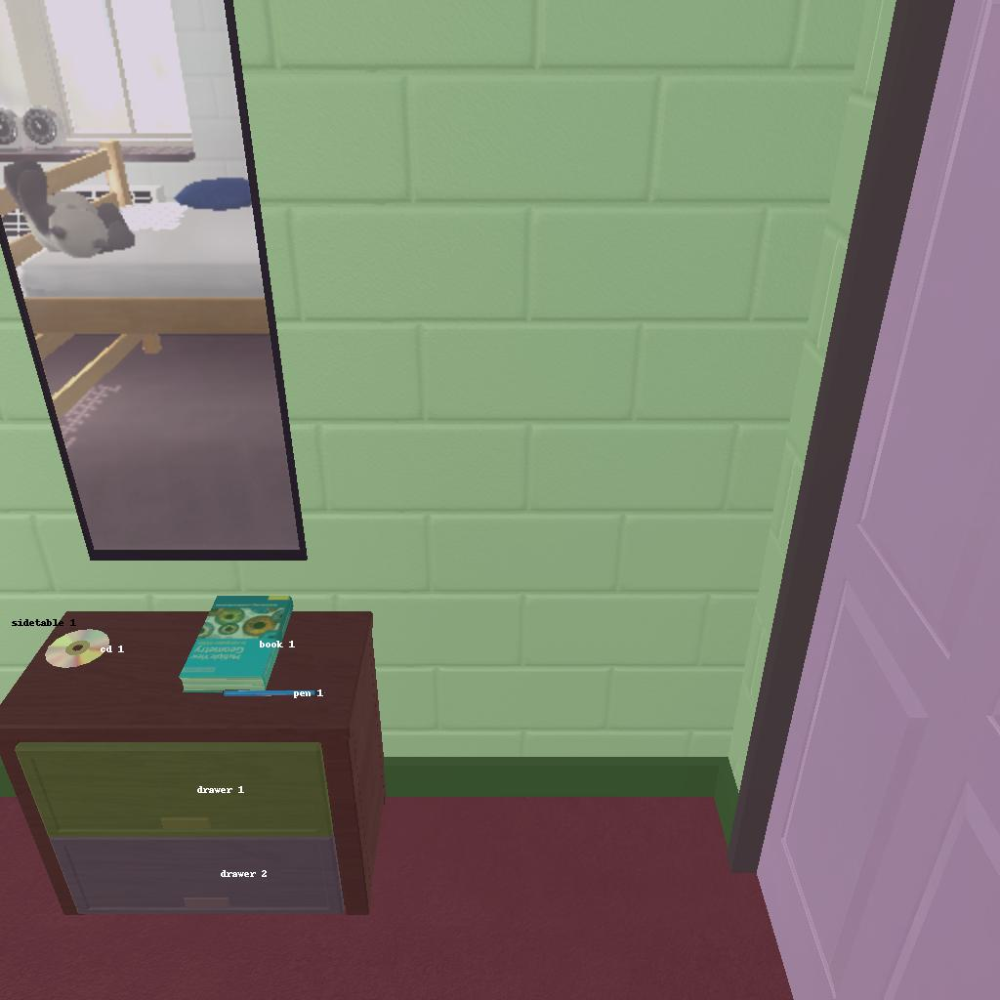

---------------------------------------------------------task: 8---------------------------------------------------------
--------------------------------------------------------------------------------------------------------------------------------------------------------------------
--------------------------------------------------------------------------------------------------------------------------------------------------------------------
Step:--------------------------------------------------------------------------9-------------------------------------------------------------------------------
----------------------------------------
VLM Prompt:
Image1:
Image2:
Image3:
**Instruction**
1. Analyze the provided image to identify all visible household objects, focusing on those relevant to the task description "put some laptop on desk."
2. Use the analysis of the image and the task hint "The agent must find an object of the desired type, pick it up, find the correct location to place it, and put it down there." to answer the question: what is the most reasonable action in the choices for the task description "put some laptop on desk"?
4. Decide and write the answer using the template: The answer is: (i): , where i is the real number. If there is no desired object in the image, search every place based on **Initial Observation** to find the object. And if no one is exactly correct, choose a similar answer.
**Initial Observation**
You are in the middle of a room. Looking quickly around you, you can see bed (1), garbagecan (1), desk (1), sidetable (1), drawer (1-5), laundryhamper (1)
**Answer Choices**
(1): go to bed 1
(2): go to garbagecan 1
(3): go to sidetable 1
(4): go to drawer 2
(5): go to laundryhamper 1
(6): go to drawer 3
(7): go to drawer 4
(8): go to drawer 5
(9): open drawer 1
(10): close drawer 1
(11): examine drawer 1
**Answer**
Let's think step by step by following the instructions.
----------------------------------------
----------------------------------------
Original Response:
First, we analyze the provided images. In Image 1, we can see a "desk 1" with an "alarmclock 1" and two "pens" on it. In Image 2 and Image 3, we can see a "sidetable 1" with a "book 1" and a "cd 1" on it, and a "drawer 1" and "drawer 2" which are part of the sidetable. There is no laptop visible in any of the images.
Based on the initial observation, we know there are more drawers (drawer 3, drawer 4, drawer 5) and other objects in the room that are not visible in the images. Since the task description is "put some laptop on desk," the most reasonable action is to search for the laptop in the places that are not visible in the images. Therefore, we should check the other drawers that are not shown.
The answer is: (6): go to drawer 3.
----------------------------------------
----------------------------------------
>>> Refine Original VLM Response and Get Pure Action: go to drawer 3
----------------------------------------
-----------------------------------------------------------------
Running time: 15.235525131225586 seconds
Total Money: 4.623279999999999
-----------------------------------------------------------------
-----------------------------------------------------------------
Text Observation:You arrive at loc 7. The drawer 3 is open. On the drawer 3, you see a desklamp 1, a alarmclock 1, a laundryhamperlid 1, a alarmclock 2, a cellphone 1, a keychain 2, a creditcard 1, a pen 3, a pen 2, a pencil 1, a pencil 2, and a keychain 1.
-----------------------------------------------------------------
UNSUCCEED